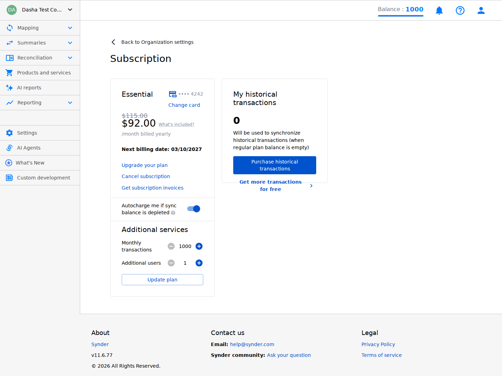
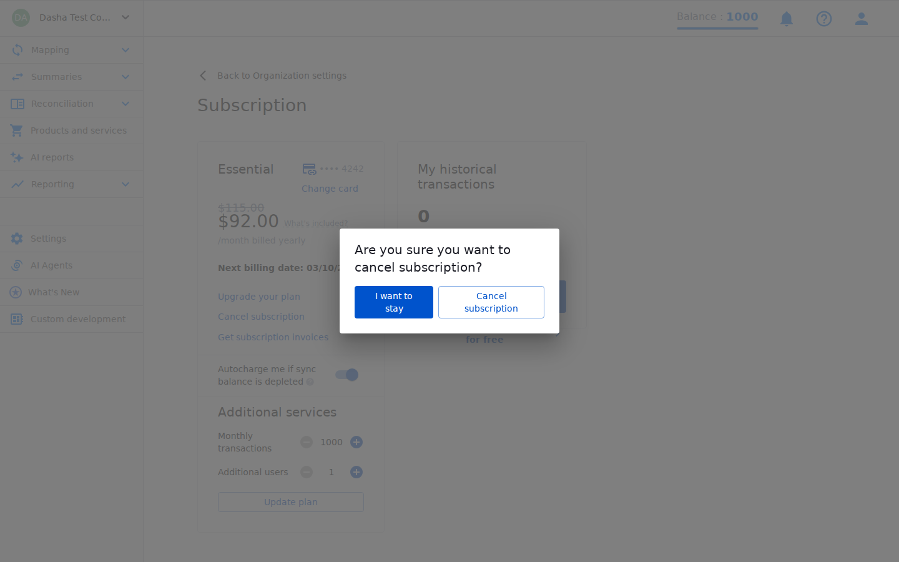
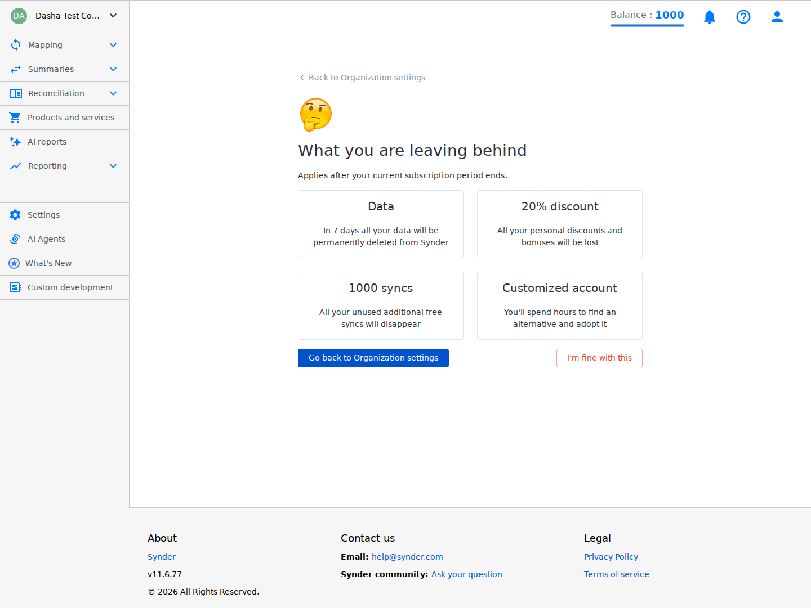
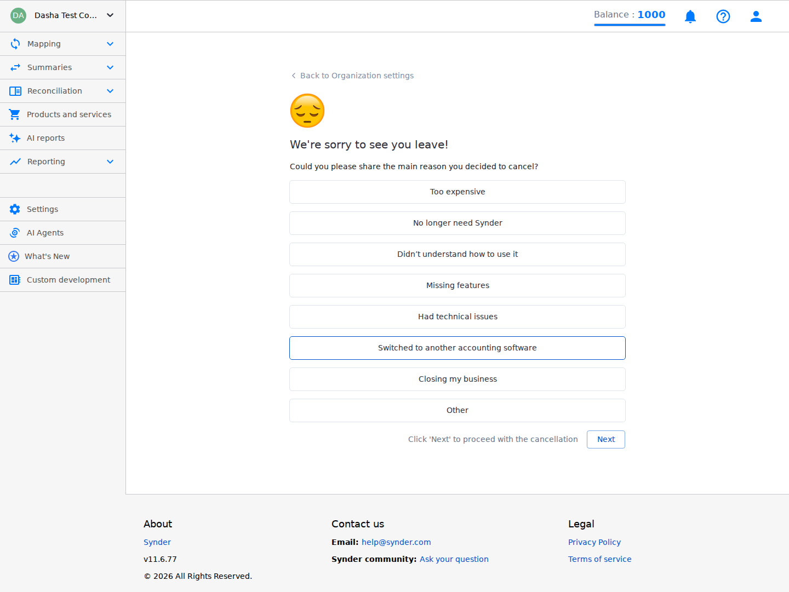
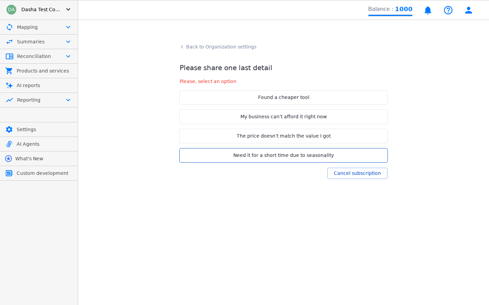
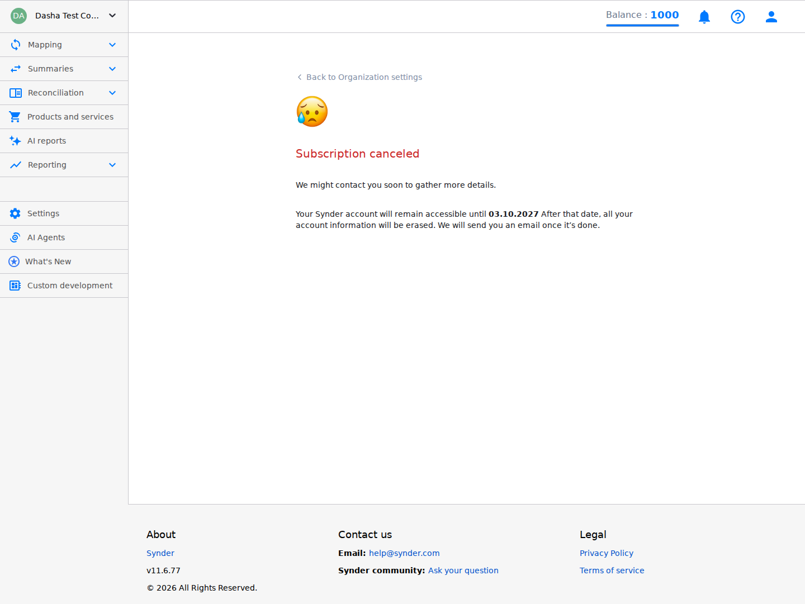

"Cancel subscription" is a plain blue text link sitting between "Upgrade your plan" and "Get subscription invoices" — three links with wildly different consequences and zero visual differentiation.
The "Update plan" ghost button sits below the transaction/user steppers with no clear context — does it change the plan tier, or save the add-on adjustments? It also visually competes with the filled "Purchase historical transactions" upsell button, inverting the hierarchy.

"I want to stay" is the primary filled blue button (left), while "Cancel subscription" is the secondary outlined button (right). In every standard modal pattern, the confirming action goes on the right and is primary. This inversion is applied across all three consecutive screens, making each step harder to complete than the last for a user who has explicitly stated intent to cancel.
"Are you sure you want to cancel subscription?" provides no information about when the cancellation takes effect, whether data will be deleted, or whether the billing stops immediately. This is the critical moment for informed consent — and it's blank.

This page says: "In 7 days all your data will be permanently deleted from Synder." But the final confirmation screen (S6) says: "Your Synder account will remain accessible until 03.10.2027" — over a year from now. These statements directly contradict each other. The small qualifier "Applies after your current subscription period ends" is easy to miss, and most users will read "In 7 days" as 7 days from right now.
"You'll spend hours to find an alternative and adopt it" is not information — it's the product arguing with the user's decision. It's presumptuous, argumentative, and damages trust at a moment when the brand should be graceful.
"Go back to Organization settings" is the large filled primary button. "I'm fine with this" (the actual continuation) is a small outlined secondary button far to the right. The user has now confirmed intent twice — continued friction is obstruction, not protection.
After showing scary loss items, making users affirm "I'm fine with this" is guilt-tripping. It forces the user to emotionally declare they don't care about their data, discounts, etc.

Every SaaS cancellation flow in this category uses the "Why are you leaving?" answer to trigger a contextual save offer. "Too expensive" → offer a discount or downgrade. "Missing features" → show the roadmap or route to support. "No longer need it" → offer a pause. Synder collects the data but does nothing with it.
The only affordance for a selected reason is a blue border on the card. No fill, no checkmark, no radio dot. A user who quickly clicks and moves on may not notice their selection registered.
"Click 'Next' to proceed with the cancellation" — users know how to use buttons. This text implies the reason is optional (you can click Next regardless), which contradicts the mandatory validation on S5.

Users have no idea they're in a multi-step survey. S4 says "Next," S5 suddenly says "Cancel subscription." There's no stepper, no "Step 2 of 2," no breadcrumb. Users can't gauge how long this will take.
The sub-reason is required (S5b shows validation error) but there's no "Prefer not to say" or "Skip" option. After already completing a mandatory main reason, forcing a granular mandatory sub-reason creates resentment and garbage data as users click anything to proceed.
S5 has no way to return to S4. If a user picked the wrong reason, their only escape is "Back to Organization settings," which presumably abandons the entire cancellation flow.
"Please, select an option" — the comma after "Please" is grammatically unusual in UI copy. Also uses color alone to indicate error (no ⚠ icon), which is an accessibility issue.

The confirmation screen has zero buttons or links. If a user cancelled accidentally or changes their mind immediately, there's no "Resubscribe" option. No dashboard link. No next step at all. Dead end.
The screen says all account data will be erased after the subscription period ends. For an accounting tool — where data has legal, tax, and audit implications — the user should be prompted to export their data before it's gone.
"accessible until 03.10.2027" — DD.MM.YYYY format will read as March 10 for US users when it likely means October 3. Also: "We might contact you soon to gather more details" after a completed mandatory 2-step survey reads as a threat of more friction, not a reassurance. "After that date, all your account information will be erased" runs on without a line break.
The flow applies inverted button hierarchy across 3 consecutive screens — S2, S3, and S5 all visually demote the cancellation action. After the user has confirmed intent twice, this ceases to be protection against accidental clicks and becomes deliberate obstruction. The FTC's 2024 "Click-to-Cancel" rule specifically prohibits making cancellation harder than subscription.
Every competitor (Stripe, HubSpot, Intercom, Mailchimp, Xero) uses churn survey answers to trigger contextual saves. "Too expensive" → discount/downgrade. "Missing features" → roadmap. "No longer need" → pause. Synder collects this data but does nothing with it — leaving money on the table at the most critical moment in the subscription lifecycle.
The cancellation flow spans 6 distinct steps across multiple pages, but the user has zero indication of how far along they are. The step count is also hidden — the "Next" button on S4 becomes "Cancel subscription" on S5 with no transition context.
S6 is a dead end — no button to resubscribe, go to dashboard, or export data. For a product that handles users' accounting data (with tax and legal implications), leaving users with zero path forward after cancellation is both a UX and trust failure.
Throughout the flow, "Cancel subscription" is always rendered as a ghost/outlined button (never filled, never red). While making destructive actions visually secondary is appropriate for preventing accidental first clicks, applying it across 3+ confirmation screens after repeated intent — and against industry-standard red/filled conventions — is a systematic style mismatch.
The flow uses a 🤔 emoji on S3 and 😢 on S6 to elicit guilt. Synder is a B2B accounting tool used by bookkeepers and business owners. The tone is wildly mismatched — and at the moment of cancellation specifically, emotional manipulation erodes trust instead of building goodwill.